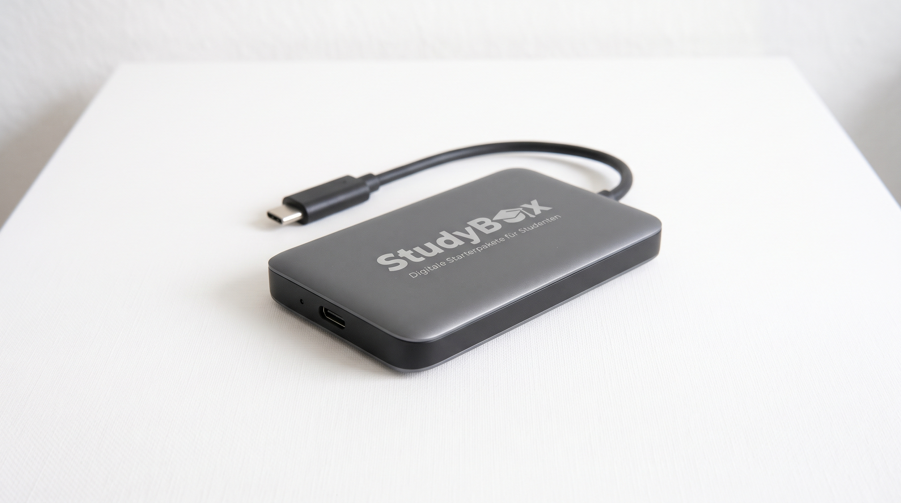

Lea M.
★★★★★
Das Bundle deckt alles ab, was ich für mein Informatikstudium brauche. Besonders praktisch finde ich das Zusammenspiel aus Notebook, Monitor und Tablet.


Das Informatik Bundle wurde speziell für Studierende der Informatik, Wirtschaftsinformatik, IT-Sicherheit, Data Science und Künstlichen Intelligenz entwickelt. Es enthält alle wichtigen Geräte für Vorlesungen, Programmierprojekte, Homeoffice und den Hochschulalltag.
Informatik-Studierende arbeiten häufig gleichzeitig mit Entwicklungsumgebungen, Datenbanken, Dokumentationen, Browsern und Cloud-Diensten. Dieses Bundle bietet die notwendige Ausstattung für produktives Arbeiten an der Hochschule, im Unternehmen und im Homeoffice.
Für Informatikstudiengänge werden 16 GB oder mehr Arbeitsspeicher sowie 512 GB oder mehr interner Speicher empfohlen. Ein Tablet ist optional. Dies sind Richtwerte; maßgeblich sind die Anforderungen deiner Hochschule und der verwendeten Software.

Das leistungsstarke Notebook bildet das Herzstück des Bundles. Es eignet sich für Programmierung, Datenbanken, Softwareentwicklung und Projektarbeiten.

Der externe Monitor bietet eine größere Arbeitsfläche und sorgt für mehr Übersicht beim Programmieren und Lernen.

Das Tablet ermöglicht digitales Mitschreiben, Organisieren von Vorlesungsunterlagen und Lernen unterwegs.

Mit dem digitalen Eingabestift lassen sich Vorlesungsmitschriften, mathematische Formeln, Diagramme und Skizzen direkt auf dem Tablet erstellen.

Die kabellose Tastatur ermöglicht komfortables Arbeiten am Monitor oder Tablet und erleichtert längere Schreibarbeiten.

Die ergonomische StudyBox Maus sorgt für komfortables Arbeiten bei längeren Programmier- und Rechercheaufgaben.

Die Dockingstation erweitert das Notebook um zusätzliche Anschlüsse und ermöglicht den einfachen Anschluss von Monitor, Maus und Tastatur.

Die externe Festplatte bietet zusätzlichen Speicherplatz für Programmierprojekte, Datenbanken, Dokumentationen und wichtige Backups.

Die gepolsterte Laptoptasche schützt das Notebook beim täglichen Transport zwischen Hochschule, Bibliothek und Zuhause.
Das Bundle deckt alles ab, was ich für mein Informatikstudium brauche. Besonders praktisch finde ich das Zusammenspiel aus Notebook, Monitor und Tablet.
Ich kann damit sowohl unterwegs in der Uni als auch zu Hause komfortabel arbeiten. Die Dockingstation macht den Wechsel zwischen den Arbeitsplätzen einfach.
Eine gute Zusammenstellung für den Studienalltag. Mit dem Tablet-Stift kann ich meine Vorlesungsnotizen direkt digital organisieren.